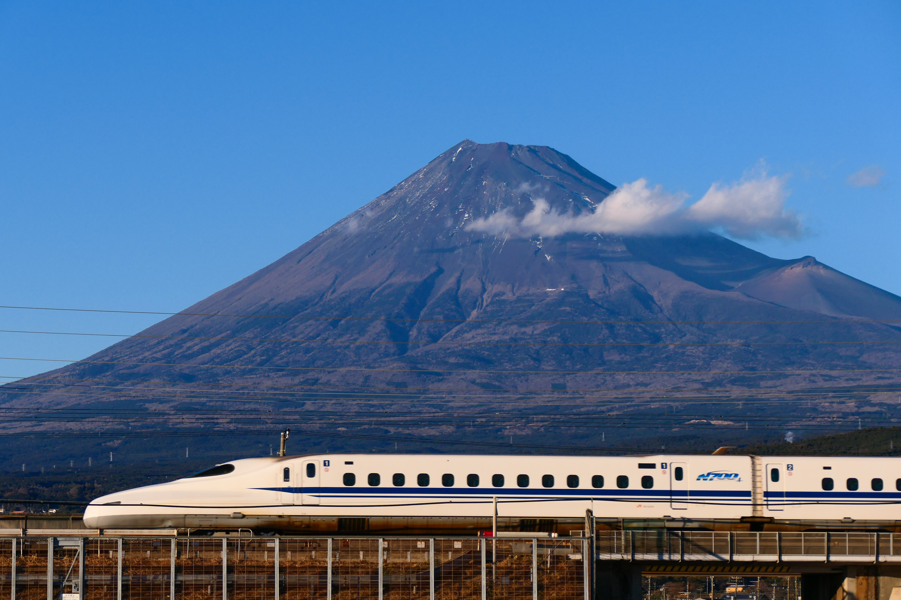
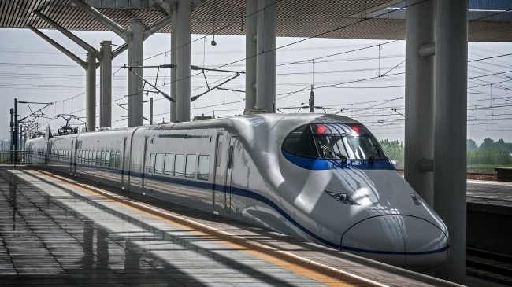
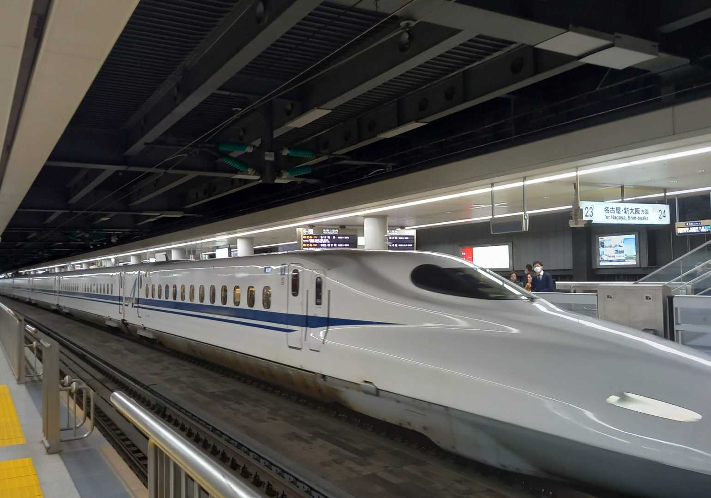

About High Speed Rail
High-speed rail (HSR) is a type of rail transport network utilizing trains that run significantly faster than those of traditional rail, using an integrated system of specialized rolling stock and dedicated tracks. While there is no single standard that applies worldwide, lines built to handle speeds above 250 km/h (155 mph) or upgraded lines in excess of 200 km/h (124 mph) are widely considered to be high-speed.
  